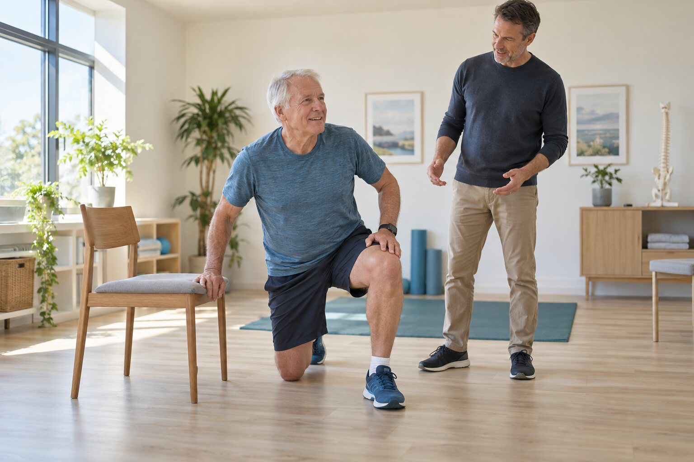

Rise & squat
Sit, stand and move towards lower positions.
Physio Life Skills · Movement · Launching in 2027
Reach. Turn. Squat. Kneel. Get down to the floor—and find your way back up.
Movement is not about achieving one perfect shape. It is about having enough strength, control, confidence and choice to meet the everyday situations that matter to you.
Movement can be explored, practised and expanded.
Early access is planned for 2027. The assessment is being carefully developed and trialled before bookings open.
Movement helps keep life open
There is rarely only one correct way to solve an everyday movement problem. Having more than one strategy helps you adapt—to the floor, the garden, a staircase, a suitcase or an unexpected obstacle.
The goal is not to look like somebody else. It is to keep the movements that support your own life within reach.
Ten useful movement families
These are not ten tests to pass. They give us a practical way to notice what feels easy, what feels restricted and what you may have stopped doing.
Sit, stand and move towards lower positions.
Reach down and pick something up.
Climb and control the way back down.
Lower yourself with one foot ahead.
Move down, roll, kneel and return to standing.
Move beyond your base and find your way back.
Look, reach and change direction comfortably.
Use the space above, around and below you.
Move forwards, backwards and sideways.
Move quickly, land and accept force when appropriate.
Getting a clearer picture
A Movement Assessment uses everyday tasks and progressive movement challenges to understand what your body can do—and what might help it do more.
We may explore sitting and squatting, bending, stepping, split stance, reaching, turning, kneeling and getting down to and up from the floor. The movements are adapted to you; this is not a performance or a competition.
The question is not simply, “Can you do it?” We look at how available, controlled, confident and adaptable the movement feels.

Four ways to understand movement
Can you reach the position or complete the task?
Can you move without collapsing, rushing or relying on momentum?
Do you trust the movement enough to use it in real life?
Can you adapt the movement or solve it in more than one way?
Your movement focus
Your assessment should lead to action. Rather than trying to improve everything at once, we choose one or two movement skills that matter most and practise them regularly.
That might mean becoming more comfortable near the floor, controlling a step down, exploring a supported squat or turning and reaching with greater ease.
An example
With a sturdy chair beside you, step one foot back and explore lowering towards a comfortable half-kneeling position. Use support and notice what becomes easier with practice.
Your own plan can include a short video or QR link so the movement is easy to remember at home.
Start where you are
You do not need to be flexible, athletic or pain-free. If an everyday movement has become less comfortable, less confident or simply disappeared from your life, that is a useful place to begin.
The goal is not a perfect movement. It is a more capable you.
Early access opening in 2027 · Final format and price to be confirmed
Join the priority list → Map, parking & directions →